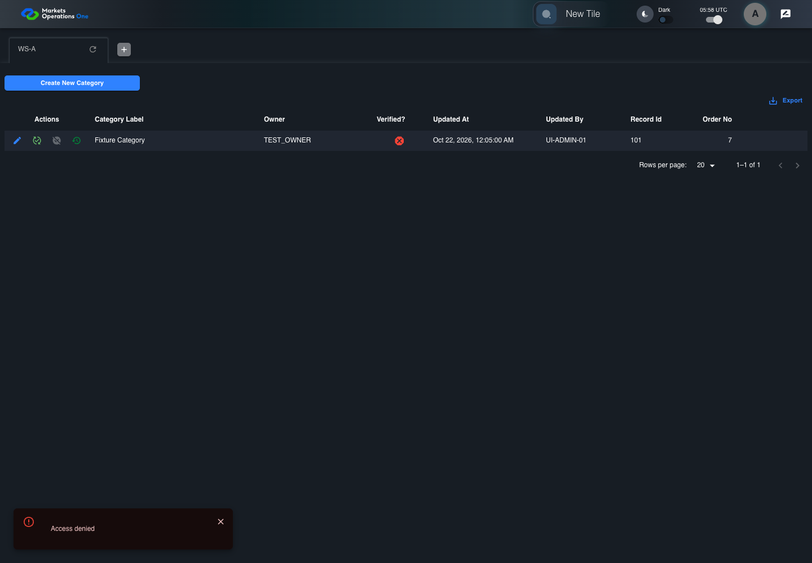
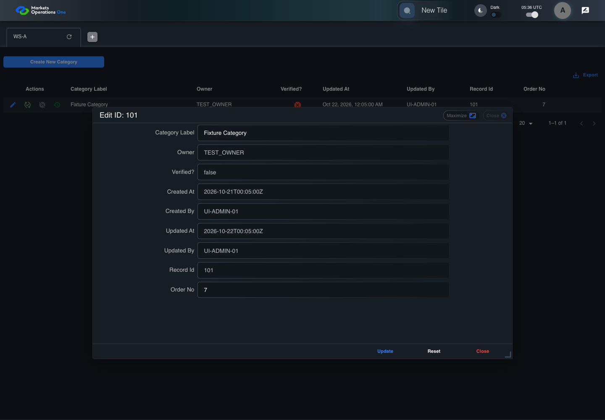

All canonical cases
AUTH-128: Display service authorization denial without misclassifying expiry Business acceptance remains unverified. Owner: unknown. Review the canonical definition and fixture limits before acceptance.
Latest local result: PASS Business acceptance: NOT_ESTABLISHED.
The latest local result describes execution. The historical definition review assesses the case design before execution.
Latest step screenshot evidence: COMPLETE . 11/11 canonical steps have execution screenshots.
Canonical Gherkin definition . Definition version: 2. SHA-256: b911359f6843ae3b110f39061c6874abdc81f3386780a3893bb7a967e9b3112a.
Historical definition review (preflight): UNVERIFIED A definition review FAIL can coexist with local PASS. The definition failed preflight quality checks.
This historical review does not change the latest execution result. Resolve definition gaps before business acceptance.
Canonical Gherkin steps Feature: BFF boundary
@AUTH-128
Scenario: Display service authorization denial without misclassifying expiry
Given User A is authenticated as user-a in an isolated browser context
And the selected fixture tab is labelled "WS-A" inside the tablist named "workspaces" on the Home page
And User A has entity FMO PORTAL ADMIN with owner role TEST_OWNER
And the Category editor shows fixture record 101 in the dialog titled "edit ID: 101" on the administration page
And the Category update POST returns HTTP 403 with message="Access denied"
When User A clicks the button labelled "Update" inside the dialog titled "edit ID: 101" on the administration page
Then the alert in the portal notification area displays exactly "Access denied"
And the POST to "/api/auth/v1/fmo/admin/category/update" has HTTP status 403 and no category record in its response
And the visible Category record 101 values equal their pre-update values
And the installed access credential equals its pre-action value
And the tab labelled "WS-A" inside the tablist named "workspaces" on the Home page is visible Acceptance and evidence limits: NO_COMPLETE_REAL_APPLICATION_BINDING, CANONICAL_REVIEW_OR_EVIDENCE_UNRESOLVED.
Planned essential canonical frames: 2. Plan completeness requires separate review.
Latest attempt AUTH-128 Category update response handling with step evidence PASS · application/run-050/auth-128-category-update-response-handling-with-step-evidence-85cde3d01bcf-attempt-1 · ACTUAL_APPLICATION_LOCAL_SERVICES
Actual Category editor and Axios response handler. Controlled login supplies user-a with TEST_OWNER. Controlled update responses establish frontend error handling only. BFF authorization and storage are not verified.
2026-10-22T05:58:44.066Z to 2026-10-22T05:58:47.045Z
Assertions and result · Artifact manifest · Exact run inputs and source hashes
Result SHA-256: a47e5b3e238d7199851b6ecbbef300327a3c4640cd65c8aa678f1adc637c4b45 Playwright trace
Machine observations Screenshot capture: CAPTURED. Named frames: 12.
Step screenshot evidence: COMPLETE. 11/11 canonical steps have execution screenshots.
Canonical step timeline Given User A is authenticated as user-a in an isolated browser context
1. step-01 Visible state after step 1: Given User A is authenticated as user-a in an isolated browser context
2026-10-22T05:58:45.129Z · 1440×1000a552094a4f46b1a02346ca1970bbb0a91bfe2d8fae8e94d76f3f14e380997e6e And the selected fixture tab is labelled "WS-A" inside the tablist named "workspaces" on the Home page
2. step-02 Visible state after step 2: And the selected fixture tab is labelled "WS-A" inside the tablist named "workspaces" on the Home page
2026-10-22T05:58:45.253Z · 1440×1000a552094a4f46b1a02346ca1970bbb0a91bfe2d8fae8e94d76f3f14e380997e6e And User A has entity FMO PORTAL ADMIN with owner role TEST_OWNER
3. step-03 Visible state after step 3: And User A has entity FMO PORTAL ADMIN with owner role TEST_OWNER
2026-10-22T05:58:45.284Z · 1440×1000a552094a4f46b1a02346ca1970bbb0a91bfe2d8fae8e94d76f3f14e380997e6e And the Category editor shows fixture record 101 in the dialog titled "edit ID: 101" on the administration page
4. step-04 Visible state after step 4: And the Category editor shows fixture record 101 in the dialog titled "edit ID: 101" on the administration page
2026-10-22T05:58:46.261Z · 1440×100098bb899f7a0a22cf9ce968005e7528e3f51b3bbd89dc3b7d01688a0ecdb938a1 And the Category update POST returns HTTP 403 with message="Access denied"
5. step-05 Visible state after step 5: And the Category update POST returns HTTP 403 with message="Access denied"
2026-10-22T05:58:46.311Z · 1440×100011474ce5e9871da7744689d64c5d9cbc974e1146c04b863de0ed99bcedd12ab9 When User A clicks the button labelled "Update" inside the dialog titled "edit ID: 101" on the administration page
6. step-06 Visible state after step 6: When User A clicks the button labelled "Update" inside the dialog titled "edit ID: 101" on the administration page
2026-10-22T05:58:46.488Z · 1440×10001e08002e6bd711f680eb7615c68feaef0bfb4de6cddc6d53d2a0cc54134e0d05 Then the alert in the portal notification area displays exactly "Access denied"
7. step-07 Visible state after step 7: Then the alert in the portal notification area displays exactly "Access denied"
2026-10-22T05:58:46.532Z · 1440×10001e08002e6bd711f680eb7615c68feaef0bfb4de6cddc6d53d2a0cc54134e0d05 And the POST to "/api/auth/v1/fmo/admin/category/update" has HTTP status 403 and no category record in its response
8. step-08 Visible state after step 8: And the POST to "/api/auth/v1/fmo/admin/category/update" has HTTP status 403 and no category record in its response
2026-10-22T05:58:46.567Z · 1440×1000fd808a5de2cbb3bae615f5dcb70956a9e01c3338adb31e7b2fb16f13c425eae8 And the visible Category record 101 values equal their pre-update values

9. step-09 Visible state after step 9: And the visible Category record 101 values equal their pre-update values
2026-10-22T05:58:46.598Z · 1440×10001e08002e6bd711f680eb7615c68feaef0bfb4de6cddc6d53d2a0cc54134e0d05 And the installed access credential equals its pre-action value
10. step-10 Visible state after step 10: And the installed access credential equals its pre-action value
2026-10-22T05:58:46.636Z · 1440×1000fd808a5de2cbb3bae615f5dcb70956a9e01c3338adb31e7b2fb16f13c425eae8 And the tab labelled "WS-A" inside the tablist named "workspaces" on the Home page is visible
11. step-11 Visible state after step 11: And the tab labelled "WS-A" inside the tablist named "workspaces" on the Home page is visible
2026-10-22T05:58:46.704Z · 1440×1000fd808a5de2cbb3bae615f5dcb70956a9e01c3338adb31e7b2fb16f13c425eae8 Additional named frames 12. final-result The final visible state after the named test assertions.
2026-10-22T05:58:46.773Z · 1440×1000fd808a5de2cbb3bae615f5dcb70956a9e01c3338adb31e7b2fb16f13c425eae8 Screenshots establish visible state only. Assertions and traces support functional claims.
Earlier attempt history (1) Earlier attempt PASS (superseded by latest PASS) AUTH-128 Category update response handling with step evidence PASS · application/run-027/auth-128-category-update-response-handling-with-step-evidence-85cde3d01bcf-attempt-1 · ACTUAL_APPLICATION_LOCAL_SERVICES
Actual Category editor and Axios response handler. Controlled login supplies user-a with TEST_OWNER. Controlled update responses establish frontend error handling only. BFF authorization and storage are not verified.
2026-10-22T05:36:16.466Z to 2026-10-22T05:36:19.114Z
Assertions and result · Artifact manifest · Exact run inputs and source hashes
Result SHA-256: c8769514d83ef0336ed52cccac2d1b9979dfd2535ca200dfd8eca202fb355f74 Playwright trace
Machine observations Screenshot capture: CAPTURED. Named frames: 12.
Step screenshot evidence: COMPLETE. 11/11 canonical steps have execution screenshots.
Canonical step timeline Given User A is authenticated as user-a in an isolated browser context
1. step-01 Visible state after step 1: Given User A is authenticated as user-a in an isolated browser context
2026-10-22T05:36:17.461Z · 1440×10008743b9334381fc5621329286aa042e2b6e99b7a64db5bff3b716a3f9659f9080 And the selected fixture tab is labelled "WS-A" inside the tablist named "workspaces" on the Home page
2. step-02 Visible state after step 2: And the selected fixture tab is labelled "WS-A" inside the tablist named "workspaces" on the Home page
2026-10-22T05:36:17.510Z · 1440×10008743b9334381fc5621329286aa042e2b6e99b7a64db5bff3b716a3f9659f9080 And User A has entity FMO PORTAL ADMIN with owner role TEST_OWNER
3. step-03 Visible state after step 3: And User A has entity FMO PORTAL ADMIN with owner role TEST_OWNER
2026-10-22T05:36:17.544Z · 1440×10008743b9334381fc5621329286aa042e2b6e99b7a64db5bff3b716a3f9659f9080 And the Category editor shows fixture record 101 in the dialog titled "edit ID: 101" on the administration page

4. step-04 Visible state after step 4: And the Category editor shows fixture record 101 in the dialog titled "edit ID: 101" on the administration page
2026-10-22T05:36:18.491Z · 1440×100004bd3def78b38ed018f84f4670f26f34f1ad1842a38d495761c8481b8c390111 And the Category update POST returns HTTP 403 with message="Access denied"
5. step-05 Visible state after step 5: And the Category update POST returns HTTP 403 with message="Access denied"
2026-10-22T05:36:18.532Z · 1440×1000851535892ab1e505e9ab9ca60eeea416d330771e4c7f14128b7c6ad3f79a5064 When User A clicks the button labelled "Update" inside the dialog titled "edit ID: 101" on the administration page
6. step-06 Visible state after step 6: When User A clicks the button labelled "Update" inside the dialog titled "edit ID: 101" on the administration page
2026-10-22T05:36:18.655Z · 1440×100031ec9e597ede9702731ff9c5eccbae31844eeb6227b9f5e3a3ae32134d711984 Then the alert in the portal notification area displays exactly "Access denied"
7. step-07 Visible state after step 7: Then the alert in the portal notification area displays exactly "Access denied"
2026-10-22T05:36:18.695Z · 1440×100031ec9e597ede9702731ff9c5eccbae31844eeb6227b9f5e3a3ae32134d711984 And the POST to "/api/auth/v1/fmo/admin/category/update" has HTTP status 403 and no category record in its response
8. step-08 Visible state after step 8: And the POST to "/api/auth/v1/fmo/admin/category/update" has HTTP status 403 and no category record in its response
2026-10-22T05:36:18.745Z · 1440×100073a67a9050451488dfbdef6216dad0316f3a8ab7e9b0f2b4f7acc45d5910ab1b And the visible Category record 101 values equal their pre-update values
9. step-09 Visible state after step 9: And the visible Category record 101 values equal their pre-update values
2026-10-22T05:36:18.780Z · 1440×100031ec9e597ede9702731ff9c5eccbae31844eeb6227b9f5e3a3ae32134d711984 And the installed access credential equals its pre-action value
10. step-10 Visible state after step 10: And the installed access credential equals its pre-action value
2026-10-22T05:36:18.812Z · 1440×100073a67a9050451488dfbdef6216dad0316f3a8ab7e9b0f2b4f7acc45d5910ab1b And the tab labelled "WS-A" inside the tablist named "workspaces" on the Home page is visible
11. step-11 Visible state after step 11: And the tab labelled "WS-A" inside the tablist named "workspaces" on the Home page is visible
2026-10-22T05:36:18.862Z · 1440×100073a67a9050451488dfbdef6216dad0316f3a8ab7e9b0f2b4f7acc45d5910ab1b Additional named frames 12. final-result The final visible state after the named test assertions.
2026-10-22T05:36:18.929Z · 1440×100073a67a9050451488dfbdef6216dad0316f3a8ab7e9b0f2b4f7acc45d5910ab1b Screenshots establish visible state only. Assertions and traces support functional claims.